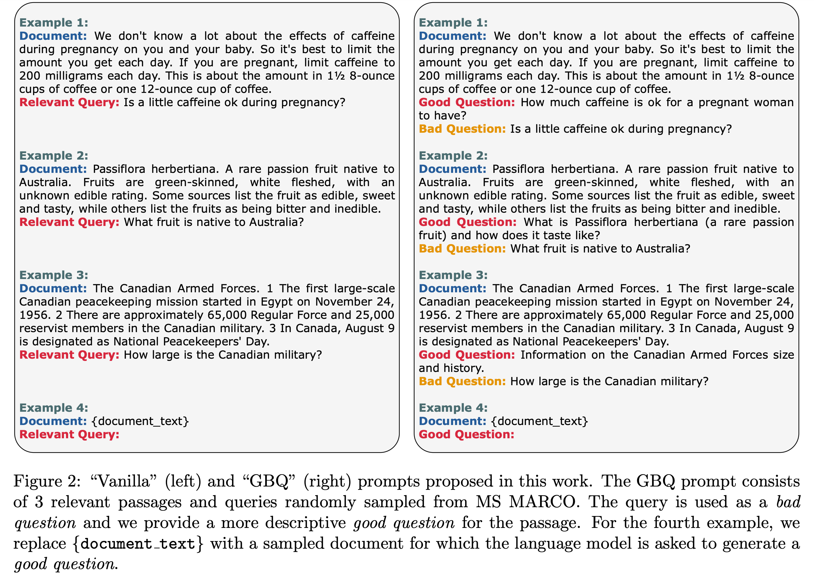

InPars 論文解読
論文URL：https://arxiv.org/abs/2202.05144
1. Introduction
LLMは高性能を誇るものの、情報検索（IR）への応用が制限されている理由として、大規模な計算量が必要であることと、コストが高いことが挙げられる。GPT-3の埋め込みサービスを利用する場合、すべてのテキストを少なくとも1回は処理する必要があり、件数が多い場合、コストが膨大になることが問題となる。
また、学習データにも課題が存在し、現存するデータが商用利用に適さないものが多く、また、既存のデータを用いて学習したモデルが他の領域に汎用性を持たないという問題がある。
この論文では、検索推論にLLMを直接使用するのではなく、LLMを用いて擬似データ（Pseudo data）を生成し、そのデータを使ってランキングモデルを学習する手法を提案している。
3. Our Method: InPars
以下はInParsのステップ：
複数のドキュメントとクエリーのペアが存在すると仮定する。それを例として、Few-shotでLLMでドキュメントに関連するクエリーを生成してもらう。(
詳細は4.2で紹介する）
生成したドキュメントとクエリーのペアについて、LLMが出力する際に出している結果のLog probabilityが上位のものを選択する。ちなみに、このステップが大きく精度を改善した。
生成したqとdのペアを学習データとしてRerankのモデルをFine-tuningする。（詳細は4.3で紹介する）

4. Experimental Setup
4.1 Datasets
今回使用したデータセットは以下：
MS MARCO：Microsoftが出したBingの実際のユーザログをベースとした大型データセット。880万のドキュメントと50万のドキュメントとクエリーのペアがある。各クエリーが平均的に1ドキュメントに対応する。
TREC-DL：MS MARCOと同じドキュメントを持っているが、クエリーは54件のみである。また、各クエリーについてアノテーションしたドキュメントが多い。
Robust04：新聞領域のデータセット。52万のドキュメントがあり、249クエリーがある。各クエリーに対して、平均的に1250件のドキュメントをアノテーションした。
Natural Questions：260万件のWikipediaテキストをベースとしたQuestion Answer データセット。QuestionはGoogleの検索エンジンのログから作ったもの。
TREC-COVID：コロナの情報に関するデータセット
4.2 Training Data Generation
各学習データは（Query, Positive document, Negative document）のTripleによって構成させる。その生成のステップは以下：
10万のドキュメントをサンプリングし、GPT3のCurieでQueryを生成させる。
最終的にLog probabilityが上位の1万件のペアのみ学習データとして使う。
BM25で検索した1000件の中でランダムに1件を抽出し、それをNegative Documentとする。（このやり方で多くのノイズを入れてしまうのでは？）
以下は２点の補足：
生成する際に温度とTopーPのパラメータ設定は結果に有意の影響しない。
長さが300文字のドキュメントは捨てられる。
Query生成する際にPromptの書き方は2つを利用した（Figure２)：
- 一般方法（Vanilla)：MS MARCOからランダムに3つのデータを抽出し、それを例として、FewーshotでQueryを生成させる。
- GBQ（Guided by Bad Questions）：一般方法と同じように、MS MARCOからランダムに3つのデータを抽出する。しかし、MS MARCOのQueryが漠然すぎるため、それをBad questionとして提示する。Documentを読んで、より関連するGood Questionを手動で作った。（Document, Good Question, Bad Question)で例を提示し、生成したGood QuestionをQueryとする。

4.3 Retrieval Methods
２段階の検索を採用している。まずBM25で上位1000のドキュメントを取り出す。その次、MonoT5を使ってRerankingをする。
MonoT5はTransformerのEncoderとDecoder両方とも使っているモデルで、Cross-Encoderモデルである。今回の実験では、サイズは220Mと3Bのモデルでテストした。
各データセットにおいて作成された擬似データでMonoT5をFine-tuningした。
5 Results

7,8行目を見ると、BM25やContriever等の以前のUnsupervised結果より優れていることがわかる。また、16行目はMS MARCOでFine-tuningした後さらに擬似データでFine-tuningした結果。幾つかのデータセットで単純にMS MARCOでFine-tuningするより良い結果が出ている。
6 Ablation Study and Analysis
6.1 Prompt Selection and Source Corpus
比較対象が混乱のため、何が言いたいかがわからなかった。
6.2 Model Size Impact on IR Metrics
当たり前だけど、Questionを生成するモデルのサイズが大きいほど結果がよくなる。
6.3 Filtering by the Most Likely Questions
Top1万件のデータを利用することにより精度が向上した。
6.4 Was GPT-3 Trained on Supervised IR Data?
生成したQuestionがどのぐらい実際のMS MARCOデータにあるかで、GPT3の学習データにMS MARCOのデータを含まれているかを検証した。結果としては多くても10％前後のため影響がない。（検証のやり方が正しいかが疑問）
7 Conclusion and Future Work
本文は、LLMを利用してQueryを生成して、生成したQueryとドキュメントのペアを学習データでモデルを学習する手法を提案した。
今後の改善点としては、
- 擬似データでDense RetrieverをFine-tuningする（今回はRerankerのみ）
- データを生成する際に作った”BAD question”をNegative exampleとして使用する
- 擬似データの数を増やす
- （Query, Document)のペアを探すもっと良い手法を開発する